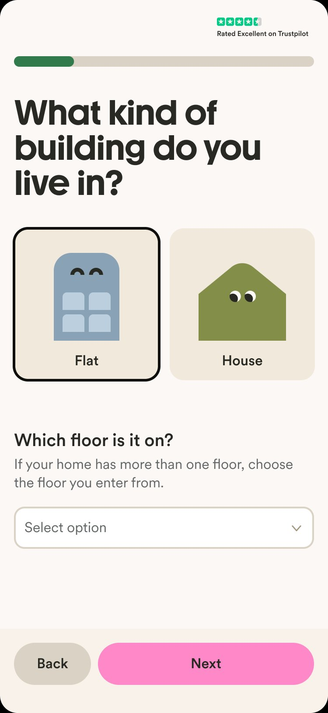
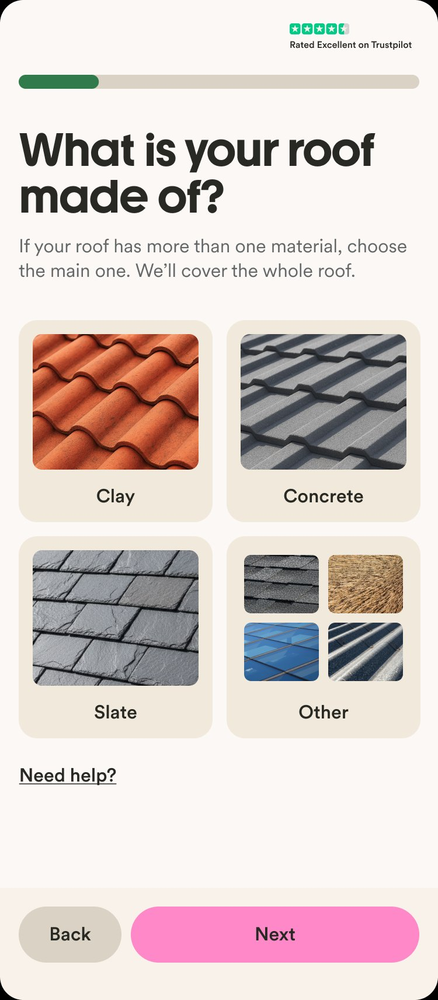
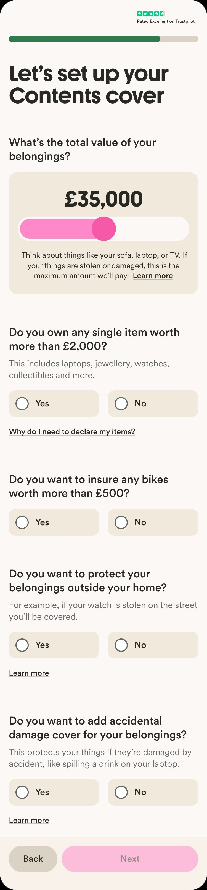
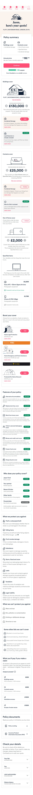
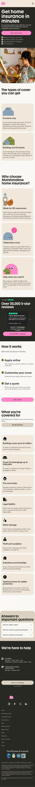

Shipping home insurance in six months, as the solo designer.
Marshmallow's first expansion beyond car insurance — a 0→1 home insurance product that launched in January 2025 after a previous attempt had stalled three years earlier.
A second attempt at a product that had stalled.
Marshmallow is a UK challenger insurtech best known for car insurance, with a strong position among new-to-UK customers. Home insurance had been explored once before in 2021–22 but hadn't shipped. By mid-2024 the business decided it was time to try again — with a clearer plan, a capacity partner in place, and a real delivery commitment.
I joined the project as the sole designer in July 2024, with a launch target of January 2025. That gave us roughly six months to design, build, test and ship a full insurance product end-to-end — from landing page through quote to sign-up.
On paper, a contained design task. In reality, very little room to move.
Three things had changed since Marshmallow's first attempt, and each one added significant weight to the scope:
Pricing had to align to industry standards. Matching how the rest of the market priced home insurance meant introducing around 25 additional data points we'd never collected before.
New regulatory requirements. The FCA's Consumer Duty had come into effect, raising the bar for how clearly we communicated cover and price. We also needed ID verification and fraud checks we hadn't previously needed.
A capacity partner to integrate with. Commercial arrangements meant we had specific constraints on what we could launch with — and what had to wait.
Layered on top of all that: our existing design system had been built for car insurance. Home has a different shape — different data, different decisions, different customer concerns. Reuse was essential for speed, but only where it genuinely fit.
Meeting the new pricing requirements meant adding 25 new data points on top of what we already had for car insurance. On its own, that would have pushed the flow to 57 questions — a non-starter for conversion.
A lot of the work here was problem definition as much as interface design. I worked through a consolidated sheet of data requirements from underwriting, pricing and our capacity partner, and for every single field I had to figure out: do we need to ask the customer this at all? If yes, what's the clearest question, what are the answer options, what validation applies, what does the branching logic look like? The visual side — how each question felt on screen, how the flow breathed, how the components held together — was just as much a focus.
I also drove the integration with a third-party property data provider to pre-fill a large chunk of the property information — customers confirm rather than type. And I pushed for reusing motor components, validation patterns and flow logic wherever the data type was the same, which kept engineering build time down.
We ended up with 25 questions instead of 57 — while still meeting every underwriting and pricing requirement.


The original exploration had customers configuring their cover through a dense set of interactive controls — sliders, increment/decrements, expandable modules with dependencies between them. Elegant, but assumed a more flexible product than the one we were launching.
I reframed the problem. Given the MVP offering, what did the customer actually need to decide? Five or six clear yes/no choices. Simple, guided, one decision at a time. It mapped 1:1 to the product and removed an entire category of UI complexity engineering would otherwise have had to build and maintain.
I validated the new approach through moderated user testing — walking customers through the flow, checking where hesitation showed up, iterating wording and order based on what I heard.

The quote page is the moment of truth. It's where the customer sees their price for the first time and decides whether to buy. The earlier version had been designed for a richer product proposition than the one we were actually shipping, so the experience didn't quite match what we could offer at launch.
I redesigned the page with conversion as the goal. Simpler structure, clearer information hierarchy, a feature-led approach that led with what customers told me actually mattered to them.
To figure out what to lead with, I planned and ran features research myself — talking to customers about what they valued in home cover, what felt reassuring, what felt unnecessary. That directly shaped which benefits got top billing, how the cover summary was organised, and how we framed what was and wasn't included.


We already had landing pages for car and for new-to-UK that were performing well. Rather than design something bespoke, I reused the same template and focused design effort on what actually affected conversion here:
Content and proposition — worked with copywriting to figure out how to describe the offering in Marshmallow's voice, aligned with SEO strategy.
Which USPs to lead with — ran a short series of usability tests to see which policy features and positioning resonated most with our target customer. The research, not the visual design, was what shaped this page.
This freed up weeks of design and engineering time to spend on the harder problems downstream.

Three moments of research changed what we built.
Competitor teardown
Mapping the UK market to understand which questions were genuinely necessary for pricing, which were table-stakes for customer trust, and which we could skip. This is what surfaced the third-party prefill idea.
Moderated customer interviews
Sessions on cover preferences and feature interest — these shaped the feature-led framing of the quote page and the order of the cover customisation questions.
Usability testing through the flow
Particularly on the new question patterns and the cover customisation page. Two rounds, small samples, quick turnaround. Several of the final copy and ordering choices came directly from these sessions.
Launched in January 2025, on time.
Home insurance launched as planned, to the planned direct-only rollout. Post-launch performance is tracked internally — I can share the specifics in conversation.
Beyond the metrics, a few things I'm proud of:
— Shipping a full insurance vertical as a solo designer, on timeline.
— Taking a project that had previously stalled and finding a path that worked.
— Keeping the design simple enough that the team could actually build and maintain it, rather than shipping something beautiful but fragile.
Take ownership sooner. Advocate harder for the resources.
Looking back, the thing I'd change isn't about the design itself — it's about how I showed up. As the solo designer on a 0→1 launch with this much complexity, pushing earlier for more design capacity, more research time, or sharper prioritisation conversations would have given the work more room to breathe.
The product still shipped well. But I've taken that lesson forward into how I engage with scope and staffing on everything since.